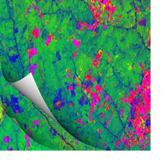
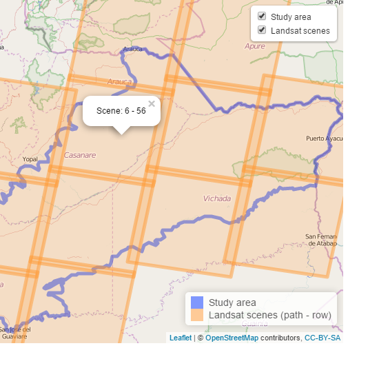

Using R for file stacking in CLASlite
 CLASlite is a powerful image processing software developed by the Carnegie Institution for Science that provides functionality for calibration, pre-processing, atmospheric correction, cloud masking, Monte Carlo Spectral Mixture Analysis and classification.
I describe in this post how to use the R language for creating the text files required by CLASlite for stacking imagery through batch processing. This is a simple application that shows R beginners how to make use of basic R functions such as file listing and for loops.
Read more ...Web mapping with Leaflet and R
 Leaflet is a JavaScript library that has become quite popular for creating interactive maps. One way to create a map using the Leaflet JS library is to include the Leaflet JS and CSS files in the head of a web page and then set up the map in the body of the html page.
An alternative way is to create the web map in the R environment using an R package called leaflet, developed by the guys from RStudio, which allows controlling and integrating Leaflet maps in R. In this post I explain how to read a vector map in format and create a leaflet web map customizing how the vector map is displayed. I also show how to add a legend, a layers control and popups for displaying attribute data.
Read more ...Welcome to the R-Spatialist Blog!
Hi there! Welcome to my blog!
I'll be posting about topics related to the application of programming languages to the processing, visualization and analysis of spatial data, especially using the R language.
Read more ...Subscribe to my blog via RSS
See ALL POSTS >>>